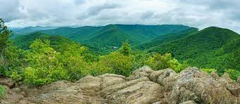
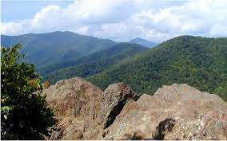
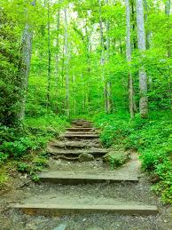
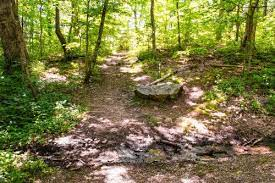
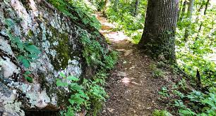
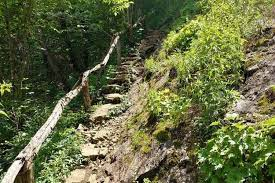
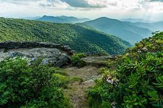
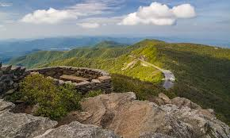
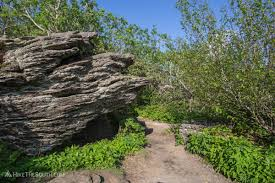

Hiking
Want to get your steps in?
We offer three trails in a guided hiking experience.
Each trail has its own wonders and difficult level.



Lookout Mountain Trail
Difficulty: Medium
This 8 mile trail will take you on twists and turns as you accend Lookout Mountain.
This journey will culminate at the top of the mountain in the Overlook, where you can truly enjoy the view.



Craven Gap Trail
Difficulty: Easy
This scenic 4 mile trail is all about nature.
There are no mountains to climb in this journey, just relax and enjoy nature.



Craggy Pinnacle Summit Trail
Difficulty: Hard
This trail is not for the faint of heart. This grueling 12 mile trek will challenge your abilities as you accend Craggy Pinnacle Summit.
At the top of this mountain you will find a deserving reward of the amazing views.